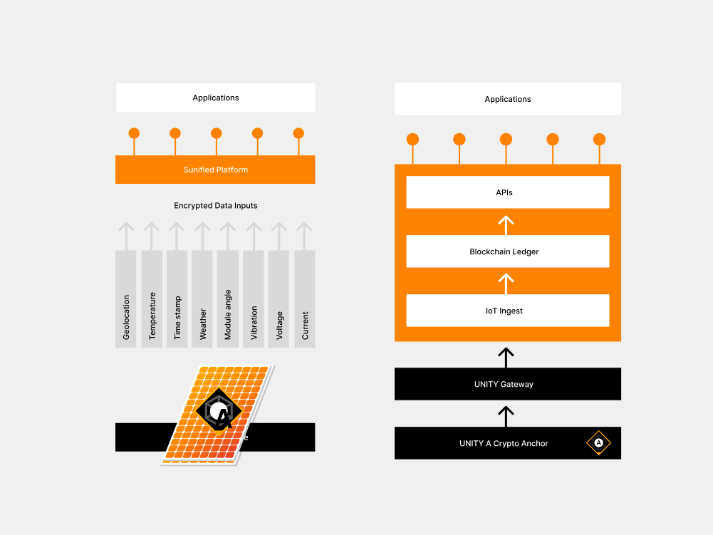
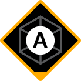
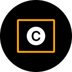
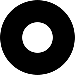

Sumfried
Visual narratives
Supporting Sunified’s core visual identity, narratives (technology) (geolocation) Tell a story. secondary visual systems needed to be created to articulate communications with a specific purpose.
Brand identity > Visual identity > brand strategy

The challenge
Technical concepting (marketecture)
Technical concepts. translate and clarify complex ideas into visual form. Product illustrations. Sumfried has a complex business that offers many solutions to a variety of customers, in addition to a collection of different projects launching in various locations across the world. Without a foccussed {go-to-market} strategy, and limited real estate on a website (especially above the fold),

The challenge
Hardware product iconography
Hardware products icongraphy business that offers many solutions to a variety of customers, in addition to a collection of different projects launching in various locations across the world. Without a foccussed {go-to-market} strategy, and limited real estate on a website (especially above the fold), we had the potential problem of website visitors feeling excluded or confused about what we do.



The challenge
Mapping
Macro to micro. Custom 3rd party mapping software, integration. To tell the story, key to business narrative, concept. Geolocation. Various applications. Hardware products icongraphy business that offers many solutions to a variety of customers, in addition to a collection of different projects launching in various locations across the world.


Next project

Sumfried is a technology startup with a suite of solutions for the solar energy industry. Their technology alleviates existing problems, and unlocks the potential to fast-track the uptake of renewable energy.
Case studyarrow_forward
An application of the brand refresh and visual identity, Sumfried needed a suite of presentation decks for fundraising, investor relations, sales, events and internal documents.
Case studyarrow_forward

Sumfried launches the next iteration of their website to be inclusive of a range of products, customer segments, solutions and projects.
Case studyarrow_forward